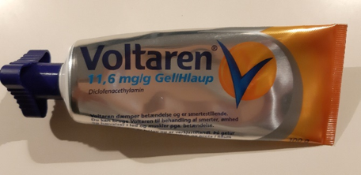
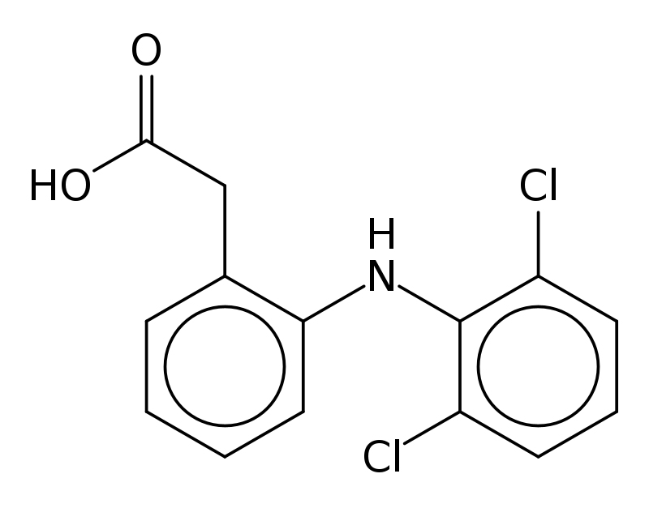
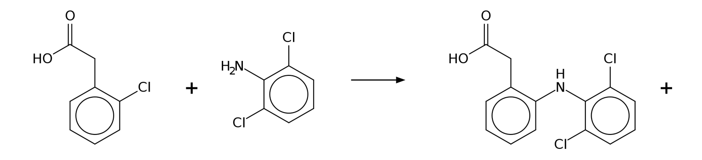
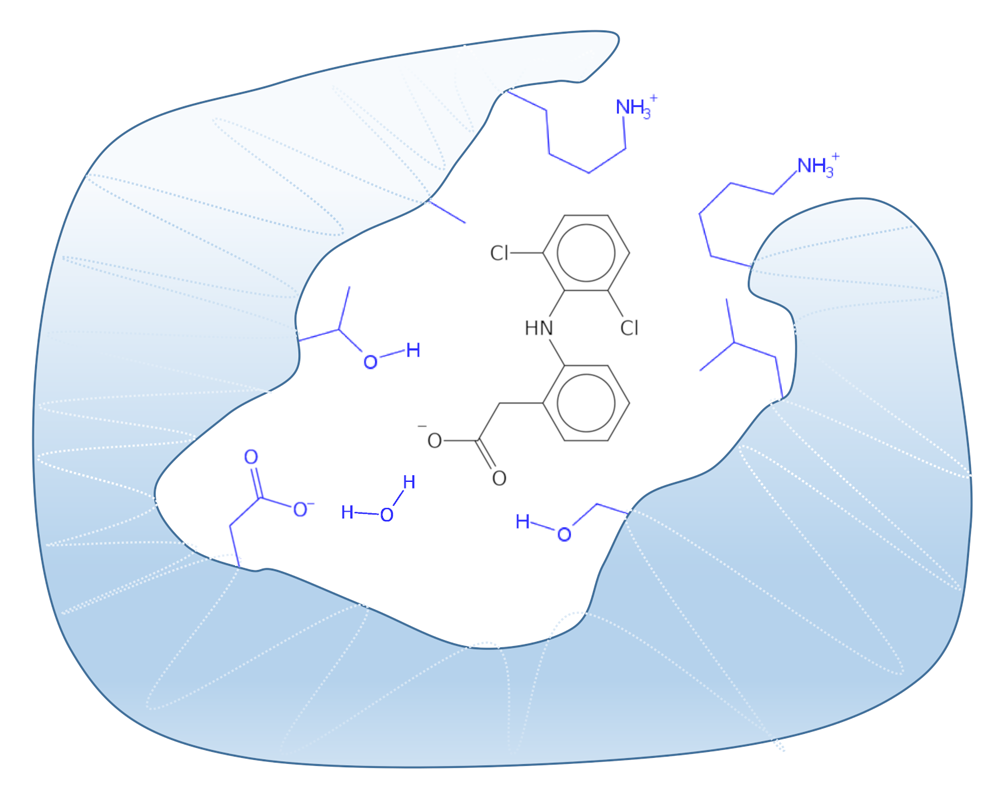
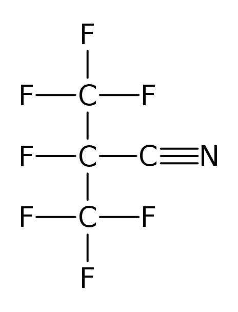
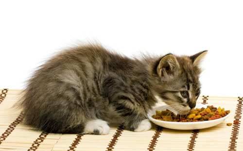
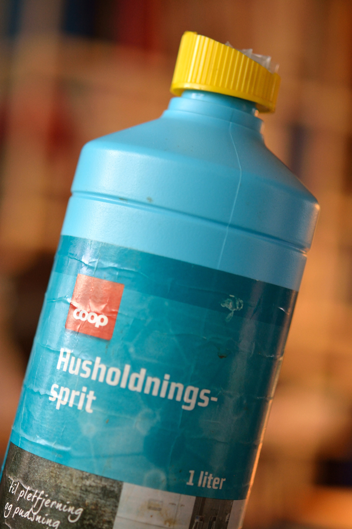
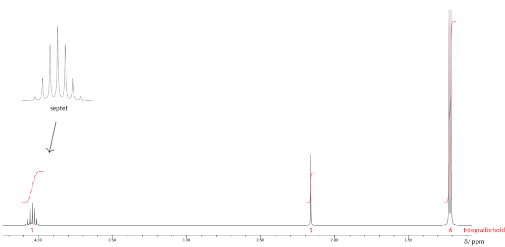
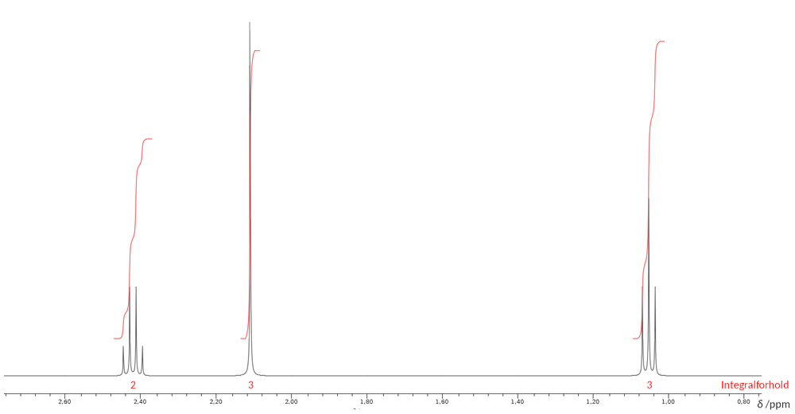

Kemi A
kl. 09.00-14.00
Vejledning
Prøven
Opgavesættet består af 4 opgaver med i alt 15 delopgaver.Følgende hjælpemidler forudsættes:
DATABOG fysik kemi (F&K Forlaget), 11. udgave (2007) eller senere udgave.
Opgavebesvarelsen
Din opgavebesvarelse skal afleveres i et samlet dokument, gemt i pdf-format.
Bedømmelse
Ved den skriftlige prøve lægges der vægt på din evne til at:
| - | anvende fagets viden og metoder til behandling af kemiske problemstillinger | |
| - | gøre iagttagelser og analysere eksperimentelt arbejde, samt efterbehandle og vurdere resultater herfra | |
| - | gennemføre og præsentere relevante beregninger med korrekt brug af fagsprog | |
| - | benytte relevante matematiske modeller, metoder og repræsentationsformer | |
| - | benytte fagspecifikke digitale værktøjer hensigtsmæssigt | |
| - | dokumentere anvendte informationer fra forskellige kilder | |
| - | udtrykke sig skriftligt, således at tankegangen fremstår struktureret og tydelig. |
Opgave 1: Voltaren
|
Voltaren er en smertelindrende gel, som indeholder stoffet diclofenac.
Voltaren fås i håndkøb og anvendes til behandling af muskelsmerter og betændelseslignende tilstande i led. Lægemidler, som indeholder en kombination af diclofenac og morfin, er receptpligtige og anvendes ofte til behandling af kræftpatienters kroniske smerter. Strukturen af diclofenac er anført nedenfor. |
 |

Figur 1.1
Figur 1.1.mrv Figur 1.1.sk2
| a) | Marker funktionelle grupper i molekylet, og angiv hvilke stofklasser de tilhører. |
Diclofenac kan fremstilles ved reaktionen vist i figur 1.2.

| A | B | diclofenac |
| M = 170,59 g/mol pKs = 4,07 |
Figur 1.2
Figur 1.2.mrv Figur 1.2.sk2
| b) | Færdiggør reaktionsskemaet i figur 1.2. Angiv reaktionstype. Begrund ud fra reaktionsskemaet. |
100 mL af en mættet vandig opløsning af stof A ved 25 °C indeholder 0,209 g A.
| c) | Beregn pH i den mættede vandige opløsning af A. |
Diclofenac omdannes forholdsvis hurtigt af enzymer i leveren. Ved første trin i omdannelsen af diclofenac dannes især D ved reaktionen vist i figur 1.3.
| diclofenac | D |
Figur 1.3
Reaktionshastigheden for dannelsen af D er blevet undersøgt ved forskellige koncentrationer af diclofenac.
Resultaterne er vist i figur 1.4 og datafilen er gemt nedenfor.
Figur 1.4
Excel-fil
| d) | Undersøg, hvilken reaktionsorden dannelsen af D følger for koncentrationer under 5 µm. Angiv funktionsudtrykket for omdannelsen. |
Diclofenacs virkning som lægemiddel skyldes, at det hæmmer et enzym, COX-2, som katalyserer dannelsen af prostaglandiner.
Undersøgelser viser dog, at diclofenac også hæmmer dannelse af en uopløselig form af et protein, transthyretin, som kan aflejres i det perifere nervesystem og i hjertevæv.
Transthyretin er et transportprotein, som findes i høj koncentration i blodet, og når diclofenac binder sig til proteinet, forbliver proteinet i en opløselig form.
Bindingen mellem diclofenac og transportproteinet transthyretin ses i figur 1.5.

Figur 1.5
| e) | Gør rede for mulige hydrofobe vekselvirkninger og hydrogenbindinger mellem diclofenac, vandmolekylet og aminosyreenhederne i proteinets bindingslomme i figur 1.5. |
Opgave 2: Drivhusgasser
|
|
I Kyoto-protokollen fra 1997 omtales seks gasser, som vurderes at være årsag til den globale opvarmning, og som derfor skal begrænses i brugen.
Svovlhexafluorid er en af disse drivhusgasser. Anvendelsen af svovlhexafluorid vækker stigende bekymring. Dette skyldes, at stoffet har en lang halveringstid i atmosfæren. Derfor er stoffet som drivhusgas 24000 gange stærkere end carbondioxid set over en 100 års periode. |
S(s) + 3 F2(g) → SF6(g)
Figur 2.1
| a) | Gør rede for, at reaktionen i figur 2.1 er en redoxreaktion. |
Der forskes i at udvikle erstatninger for svovlhexafluorid, som har en mindre drivhuseffekt. Et muligt alternativ er gassen B, som har strukturen vist i figur 2.2.

B
Figur 2.2
Figur 2.2
Forskning tyder på, at B har en væsentlig mindre påvirkning på den globale opvarmning end svovlhexafluorid.
Reaktionen mellem B og et hydroxylradikal, HO•, menes at være vigtig for stoffets drivhuseffekt. Gassen B absorberer ved 185 nm. I et eksperiment blev sammenhængen mellem koncentrationen af B og stoffets absorbans bestemt. Da der er tale om en gas, blev den spektrofotometriske undersøgelse gennemført med en særlig kuvette, hvor lysvejens længde (kuvettebredden), l, er 107 cm.
Figur 2.3
| b) | Gør rede for, at sammenhængen mellem koncentrationen af B og absorbansen med god tilnærmelse følger Lambert-Beers lov.
Bestemt den molare absorptionskoefficient for stoffet ved 185 nm. |
Reaktionen er af første orden både med hensyn til HO• og B. Hastighedsudtrykket for reaktionen er vist nedenfor.
v = k · [HO•] · [B]
Hastighedskonstanten, k, for reaktionen er bestemt ved forskellige temperaturer.
Datafilen er gemt nedenfor.
Excel-fil
| c) | Bestem aktiveringsenergien for reaktionen. |
Opgave 3: Calciumiodat - en iodkilde i dyrefoder
|  |
Calciumiodat findes i naturen i mineralet lautarit, som er den vigtigste kilde til iod. Dyrefoder kan tilsættes calciumiodat som iodtilskud.
Calciumiodat anvendes også som konserveringsmiddel i lægemidler og deodoranter. |
Opløseligheden af calciumiodat i vand er begrænset. En elev bestemmer opløseligheden af calciumiodat i laboratoriet. Først fremstilles en mættet vandig opløsning af calciumiodat, idet opløselighedsligevægten vist i figur 3.1 indstiller sig.
Ca(IO3)2(s) ⇌ Ca2+(aq) + 2 IO3−(aq)
Figur 3.1
| a) | Angiv reaktionsbrøken for opløselighedsligevægten. |
Tilvæksten i standardenthalpi, ΔH°, for reaktionen i figur 3.1 er bestemt til 75,5 kJ/mol.
| b) | Bestem H°(Ca(IO3)2(s)) ved 25 °C. |
Koncentrationen af iodat i den mættede opløsning bestemmes ved titrering. Først omdannes iodat til diiod ved reaktionen i figur 3.2.
IO3−(aq) + 5 I−(aq) + 6 H+(aq) → 3 I2(aq) + 3 H2O(l)
Figur 3.2
Under titreringen forløber reaktionen i figur 3.3.
I2(aq) + 2 S2O32−(aq) → 2 I−(aq) + S4O62−(aq)
Figur 3.3
Begge reaktioner forløber fuldstændigt.
Analysen gennemføres ved 25 °C og er vist i filmen nedenfor.
Titrering af en mættet calciumiodatopløsning
| c) | Bestem, med udgangspunkt i filmen, koncentrationen af iodat i den mættede opløsning. |
I et andet forsøg tilsættes 100 mL 0,015 m KIO3 en portion fast calciumiodat. Under omrøring indstilles ligevægten i figur 3.1 ved 40 °C. Der kan ses bort fra volumenændring. Ligevægtskonstanten er 3,7 · 10−6 m3 ved 40 °C.
| d) | Beregn massen af calciumiodat, der kan opløses i KIO3−opløsningen ved 40 °C. |
Opgave 4: Husholdningssprit
|  |
Husholdningssprit, også kaldet denatureret alkohol, indeholder ethanol, vand og forskellige tilsætningsstoffer. Husholdningssprit er typisk 93 vol% ethanol, og det benyttes i husholdningen til fx rengøring.
Husholdningssprit er tilsat stoffer med meget bitter og ubehagelig smag. Ethanol kan ikke isoleres fra tilsætningsstofferne ved destillation. Derfor kan det sælges uden afgifter. I december 2017 fastlagde EU en fælles standard for, hvilke stoffer der skal tilsættes ethanol, så det kan betegnes denatureret alkohol. |
Før havde de enkelte EU-lande forskellige procedurer for fremstilling af denatureret alkohol. I Tyskland blev 5-methylheptan-3-on tilsat.
| a) | Tegn strukturen af 5-methylheptan-3-on. Forklar navnet. |
Det mest bitre tilsætningsstof i husholdningssprit er muligt at fjerne ved fx destillation. Derfor er husholdningssprit også tilsat to andre stoffer, A og B, med ubehagelig smag og lugt. Både A og B er blandbare med en ethanol-vandblanding som husholdningssprit. A og B har kogepunkter tæt på kogepunktet for ethanol. A og B kan derfor ikke fjernes fra husholdningssprit ved destillation.
En elev ønsker at bestemme strukturen for A og B. For at fjerne det mest bitre tilsætningsstof destilleres en portion husholdningssprit over i et forlag. Destillatet kaldes Q, og er herefter en blanding af ethanol, vand, A og B. Eleven fremstiller også en kontrolblanding, som kun indeholder ethanol og vand. Blandingen er 93 vol% ethanol. Der gennemføres også en destillation af denne blanding, og destillatet kaldes P.
Derefter gennemføres kemiske tests på Q og P. Destillation og kemiske tests er vist i filmen nedenfor.
Destillation og kemiske tests
| b) | Argumenter for, hvilke bidrag de kemiske tests giver til strukturopklaringen af tilsætningsstofferne A og B i den destillerede husholdningssprit, Q. |
Der gennemføres en elementaranalyse af A. Masseprocenterne er vist i tabel 4.1.
A har den molare masse 60,096 g/mol. Den molare masse for B er 72,107 g/mol.
Nedenfor ses 1H-NMR-spektret for A i figur 4.1 og for B i figur 4.2. Spektrometerfrekvensen er 400 MHz.

Figur 4.1

Figur 4.2
| c) | Bestem strukturen for stof A og for stof B. Inddrag elementaranalysen og 1H-NMR-spektrene. Signaler i 1H-NMR-spektrene tilordnes stoffernes strukturformler, idet integralforhold, kemiske skift og koblingsmønstre inddrages. |
Filer til opgaverne
| Filnavn | Opgave | Figur | Beskrivelse |
| 194196_figur1_1.mrv | 1 | 1.1 | MarvinSketch fil med strukturformel |
| 194196_figur1_1.sk2 | 1 | 1.1 | ChemSketch fil med strukturformel |
| 194196_figur1_2.mrv | 1 | 1.2 | MarvinSketch fil med strukturformel |
| 194196_figur1_2.sk2 | 1 | 1.2 | ChemSketch fil med strukturformel |
| 194196_opg1_excel.xlsx | 1 | - | Excel datafil |
| 194196_opg2_excel.xlsx | 2 | - | Excel datafil |
Klik her for at downloade alle filer.
Kildeliste
Opgave 1
Opgavekommissionen
Opgave 2
Colourbox
Opgave 3
Colourbox
Opgave 4
Colourbox